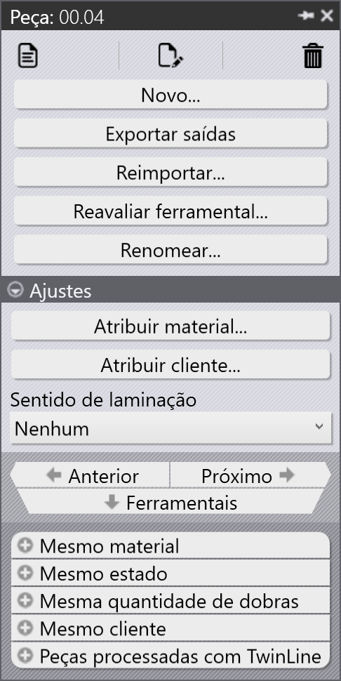

Painel da peça
Esta seção explica as ações relacionadas à peça, como Reimportar…, Reavaliar ferramental…, Renomear…, Exportar saídas etc., usadas para gerenciar instâncias de peça.
 |
|
Reimportar…
-
Clique com o botão direito em qualquer peça e clique em Reimportar….
-
Todas as instâncias de ferramental da peça selecionada em todas as máquinas são limpas, incluindo as instâncias com ferramental automático e manual.
-
Os arquivos de saída existentes (CAD, Bend e Cut) são removidos.
-
As peças são reimportadas, e uma nova validação de CAD e ferramental é aplicada para todas as máquinas.
-
Novos arquivos de saída são criados com base no resultado atualizado do ferramental.
Reavaliar ferramental…
-
Clique com o botão direito em qualquer peça e clique em Reavaliar ferramental….
-
Todas as máquinas são marcadas por padrão e agrupadas como Laser, Punch, Panel e Press brake.
-
Clique em OK para prosseguir. Isso remove as instâncias com ferramental automático e manual para as máquinas selecionadas, e exclui os arquivos de saída relacionados.
-
Quando a caixa de seleção Manter saídas existentes está selecionada, apenas as peças cujas saídas foram removidas anteriormente serão retooladas, as outras saídas permanecem intactas. Se desmarcada, todos os arquivos de saída das máquinas selecionadas são removidos e regenerados durante o retooling.
|
Renomear…
Esta seção explica como renomear uma ou várias peças no TruSmartCAM.
-
Clique com o botão direito na peça e clique em Renomear….
-
Um diálogo de confirmação de renomeação aparece exibindo o nome atual da peça.
-
Insira o novo nome e clique no ícone de marca de seleção ✓ para confirmar, ou clique no ícone de cruz ✗ para cancelar a operação de renomeação.
-
Para renomear várias peças, selecione todas as peças necessárias, depois clique com o botão direito em qualquer uma delas e clique em Renomear….
-
Um diálogo de confirmação aparece com o número total de peças selecionadas.
-
Para cada peça, insira o novo nome e clique no ícone de marca de seleção ✓ para confirmar uma por uma.
-
Se alguma peça foi selecionada por engano, clique no ícone de cruz ✗ para cancelar. Alternativamente, você pode clicar com o botão direito na peça e clicar em Cancelar renomear para pular a renomeação.
Exportar saídas
Esta opção exporta a saída da peça para o destino configurado em Ajustes de fábrica. (Consulte Bend Settings e Cut Settings)
O local de saída é definido separadamente para Bend, Fold e Cut em suas respectivas configurações de saída. Todos os ferramentais associados às operações de bend, fold e cut são exportados para a peça inteira.
| Os arquivos exportados dependem do tipo de operação. Para operações de Bend e Fold, são gerados arquivos NC e relatórios. Para operações de Cut e Punch, apenas os arquivos da peça são exportados. |
Atribuir material à peça
As peças com o status Material não atribuído precisam ser atualizadas antes do processamento adicional. As etapas abaixo explicam como atribuir o material.
-
Clique com o botão direito na peça que exibe o status Material não atribuído e selecione Atribuir material.
-
A janela Atribuir material abre.
-
O diálogo tem quatro seções:
-
Sugestões - Sugere automaticamente raw materials com base na espessura da peça importada.
-
Todos os materiais - Lista todos os tipos de material definidos no TruSmartCAM.
-
Todos os materiais em bruto - Exibe todos os raw materials disponíveis no sistema.
-
Materiais em bruto usados - Exibe os raw materials usados mais recentemente para acesso rápido.
-
-
Você pode usar o campo Pesquisar… (Ctrl+F) na parte superior para encontrar rapidamente materiais. Por exemplo, digite "steel" para exibir todos os materiais correspondentes nas três seções.
-
Na lista filtrada, selecione o material necessário (por exemplo, Steel-25) na lista de Raw-Material.
-
O material selecionado será atribuído à peça.
Sentido de laminação
Sentido de laminação refere-se à orientação do grão em uma peça, o que pode afetar como a peça é cortada e processada. Esta opção permite especificar a Sentido de laminação para uma peça na Biblioteca de Peças. Com base na direção selecionada, a peça será posicionada na orientação correta para o corte nas máquinas disponíveis.
-
Clique com o botão direito em qualquer bloco de peça na Biblioteca de Peças ou na janela Job.
-
Selecione a direção de laminação preferida:
-
Nenhum
-
Horizontal
-
Vertical
-
-
A peça é retoolada automaticamente para todas as máquinas de corte disponíveis com base na direção de laminação selecionada.
-
O bloco da peça exibirá a direção de laminação selecionada, conforme mostrado abaixo: